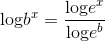
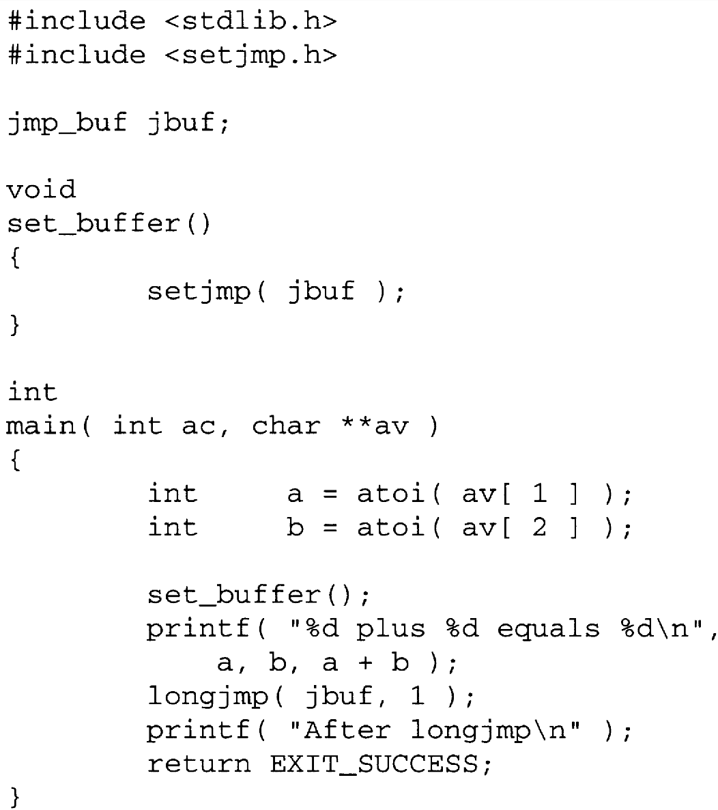
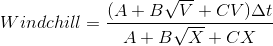
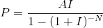

Capítulo 16 Biblioteca de funciones estándar
The Standard Library is a toolkit that greatly expands the power of the C programmer. Before you can use this power, however, you must become familiar with the library functions. Neglecting the library is like only learning how to use the gas pedal, steering wheel, and brake in your car but not bothering to learn about the cruise control, radio, and air conditioning. You may be able to get where you want to go, but it will be harder and won't be as much fun.
This chapter describes the library functions that have not been covered in previous chapters. The section titles include the file name that you need to #include to obtain the function prototypes.
16.1 Funciones enteras
This group of functions return integer values. The functions fall into three families: arithmetic, random numbers, and string conversion.
16.1.1 Arithmetic <stdlib.h>
The library includes four integer arithmetic functions.
The abs function returns the absolute value of its argument. If the result cannot be represented as an integer, the behavior is undefined. labs does the same work for long integer values.
The div function divides the first argument (the numerator) by the second argument (the denominator) and produces a quotient and a remainder that are returned in a div_t structure. This structure contains the fields
int quot;
int rem;though not necessarily in this order. If the division is not even, the quotient will be the integer of smaller magnitude that is nearest to the algebraic quotient. Note that the results of division with the / operator are not as precisely defined. When either of the operands of / are negative and the result is not exact, it is implementation defined whether the quotient is the largest integer less than or equal to the algebraic quotient or the smallest integer greater than or equal to the algebraic quotient. ldiv does the same work for long integer values and returns an ldiv_t structure.
16.1.2 Random Numbers <stdlib.h>
Random numbers are useful in programs that should not produce the same results every time they are executed, such as games and simulations. Together, the following two functions produce pseudo-random numbers, so called because they are computed and therefore repeatable, and thus not truly random.
int rand( void );
void srand( unsigned int seed );rand returns a pseudo-random number in the range zero to RAND_MAX (which must be at least 32,767). When called repeatedly, the function returns other numbers in this range. To obtain numbers from a smaller range, first take the random number modulo the size of the desired range, then scale it by adding or subtracting an offset as needed.
To prevent the random number sequence from being the same every time the program is run, the srand function may be called. It initializes the random number generator with the value passed as its argument. A common technique is to use the time of day to seed the random number generator, as in this example:
srand( (unsigned int)time( 0 ) );The time function is described later in this chapter.
The function in Program 16.1 uses integers to represent playing cards and uses random numbers to "shuffle" the specified number of cards in the "deck."
/*
** Use random numbers to shuffle the "cards" in the deck. The second
** argument indicates the number of cards. The first time this
** function is called, srand is called to initialize the random
** number generator.
*/
#include <stdlib.h>
#include <time.h>
#define TRUE 1
#define FALSE 0
void shuffle( int *deck, int n_cards )
{
int i;
static int first_time = TRUE;
/*
** Seed the random number generator with the current time
** of day if we haven't done so yet.
*/
if( first_time ){
first_time = FALSE;
srand( (unsigned int)time( NULL ) );
}
/*
** "Shuffle" by interchanging random pairs of cards.
*/
for( i = n_cards - 1; i > 0; i -= 1 ){
int where;
int temp;
where = rand() % i;
temp = deck[ where ];
deck[ where ] = deck[ i ];
deck[ i ] = temp;
}
}Program 16.1 Shuffling playing cards with random numbers
shuffle.c
16.1.3 String Conversion <stdlib.h>
The string conversion functions convert character strings to numeric values. The simplest ones, atoi and atol, perform base 10 conversions. strtol and strtoul allow you to specify the base for the conversion, and they also give you access to the remaining part of the string.
If the first argument to any of these functions contains leading white space characters, they are skipped. The functions then convert legal characters to the indicated type of value. If there are any trailing illegal characters, they are ignored.
atoi and atol convert characters to integer and long integer values, respectively. strtol converts the argument string to a long in the same manner as atol. However, strtol saves a pointer to the first character in the string after the converted value. If the second argument to the function is not NULL, the saved pointer is stored in the location pointed to by the second argument. The pointer allows the remainder of the string to be processed without having to guess where the conversion stopped. strtoul behaves in the same manner but produces an unsigned long instead.
The third argument to both of these functions is the base with which the conversion is performed. If the base is 0, any of the forms used for writing integer literals in a program are accepted, including the forms that specify the base of the number, such as 0x2af4 and 0377. Otherwise, the base may be a value in the range 2 through 36—the conversion is then performed with the given base. For bases 11 through 36, the characters A through Z are interpreted as digits with values 10 through 35, respectively. Lowercase characters a through z are interpreted the same as uppercase characters in this context. Thus,
x = strtol(" 590bear", next, 12 );would return the value 9947 and store a pointer to the letter e in the variable that next points to. The conversion stops with b because e is not a valid digit for a base 12 number.
If the string argument to any of these functions does not contain a legal numeric value, then 0 is returned. If the converted value cannot be represented, the value ERANGE is stored in errno, and one of the values in Table 16.1 is returned.
Tabla 16.1 Valores de error devueltos por strtol y strtoul
|
Function |
Returns |
|---|---|
|
strtol |
LONG_MIN if the value is too large and negative, or LONG_MAX if the value is too large and positive. |
|
strtoul |
ULONG_MAX if the value is too large. |
16.2 Floating-Point Functions
The header file math.h contains declarations for the remaining mathematical functions in the library. The return values from these functions and most of their arguments are double.
CAUTION!
A common source of error is to omit the header file when using these functions, like this:
double x;
x = sqrt( 5.5 );The compiler, never having seen a prototype for sqrt, mistakenly assumes that it returns an integer and erroneously converts the value to double. The resulting value is meaningless.
A domain error occurs if the argument to a function is not within the domain defined for that function. For example,
sqrt( -5.0 );is a domain error because square root is undefined for negative numbers. When a domain error occurs, the function returns an error value defined by the implementation, and the value EDOM is stored in errno. A range error occurs if the result of a function is too large or too small to be represented in a double. For example,
exp( DBL_MAX )will produce a range error because its result is too large. In this case, the function will return HUGE_VAL, a double value that is defined in math.h. If the result of a function is too small to be represented in a double, then the function will return zero instead. This case is also a range error, but it is implementation dependent whether errno is set to ERANGE in this case.
16.2.1 Trigonometry <math.h>
The usual trigonometry functions are provided.
The argument to sin, cos, and tan is an angle in radians; the functions return the sine, cosine, and tangent of the angle, respectively.
The asin, acos, and atan functions return the arc sine, arc cosine, and arc tangent of their argument, respectively. A domain error will occur if the argument to asin or acos is not in the range -1 to 1. asin and atan return a value in the range -π/2 to π/2 radians, and acos returns a value in the range 0 to π radians.
The atan2 function returns the arc tangent of the expression y/x but uses the signs of both arguments to determine which quadrant the result lies within. It returns a result in the range - π to π radians.
16.2.2 Hyperbolic <math.h>
These functions return the hyperbolic sine, hyperbolic cosine, and hyperbolic tangent of their argument, respectively. The argument to each is an angle in radians.
16.2.3 Logarithm and Exponent <math.h>
There are three functions that deal directly with logarithms and exponents.
The exp function returns the value e raised to the power given by the argument, or e x .
The log function returns the base e logarithm of its argument, also known as the natural logarithm. The log10 function returns the base 10 logarithm of its argument. Note that the log of a number x to an arbitrary base b may be computed like this:

A domain error occurs for both log functions if the argument is negative.
16.2.4 Floating-point Representation <math.h>
These three functions provide a way to store floating-point values in an implementation-independent format.
The frexp function computes an exponent and a fraction such that fraction × 2 exponent = value, where 0.5 ≤ fraction < 1 and exponent is an integer. The exponent is stored in the location pointed to by the second argument, and the function returns the fraction. The related function ldexp returns the value fraction × 2 exponent , which is the original value. These functions are very useful when you must pass floating-point numbers among machines with incompatible floating-point formats.
The modf function breaks a floating-point value into integer and fractional parts, each having the same sign as the original value. The integer part is stored as a double in the location pointed to by the second argument, and the fractional part is returned as the function value.
16.2.5 Power <math.h>
There are two functions in this family.
The pow function returns the value x y . Because logarithms may be used in computing this value, a domain error occurs if x is negative and y is not an integral value.
The sqrt function returns the square root of its argument. A domain error occurs if the argument is negative.
16.2.6 Floor, Ceiling, Absolute Value, and Remainder <math.h>
The prototypes for these functions are shown below.
The floor function returns the largest integral value that is not greater than its argument. This value is returned as a double due to the greatly increased range of doubles over integers. The ceil function returns the smallest integral value that is not less than its argument.
fabs returns the absolute value of its argument. The fmod function returns the remainder that results when x is divided by y, and the quotient is restricted to an integral value.
16.2.7 String Conversion <stdlib.h>
These functions are similar to the integer string conversion functions except that they return floating-point values.
If the argument to either of these functions contains leading white space characters, they are skipped. The functions then convert legal characters to a double, ignoring any trailing illegal characters. Both functions accept all of the forms used for writing floating-point literals in a program.
strtod converts the argument string to a double in the same manner as atof. However, strtod saves a pointer to the first character in the string after the converted value. If the second argument to the function is not NULL, the saved pointer is stored in the location pointed to by the second argument. The pointer allows the remainder of the string to be processed without having to guess where the conversion stopped.
If the string argument to either of these functions does not contain a legal numeric value, then zero is returned. If the converted value is too large or small to be represented, the value ERANGE is stored in errno. HUGE_VAL is returned if the value is too large (either positive or negative), and zero is returned if it is too small.
16.3 Date and Time Functions
The library offers a large collection of functions that simplify dealing with dates and times. Their prototypes are found in time.h.
16.3.1 Processor Time <time.h.
The clock function returns the amount of processor time used by the program since it began executing.
clock_t clock( void );Note that this value may be an approximation. If a more precise value is required, call clock at the very beginning of your main function and subtract the value obtained there from any future value returned by clock. If the implementation cannot provide the processor time, or if the time is too large to be represented in a clock_t variable, the value -1 is returned.
clock returns a number that is implementation defined; usually it is the number of times the processor's clock has ticked. To convert the value to seconds, divide it by the constant CLOCKS_PER_SEC.
CAUTION!
On some implementations, this function may only return an approximation of the processor time used. If the host operating system is incapable of tracking processor time, it may return the amount of real time that has elapsed instead. This behavior may also occur with simple operating systems that cannot run more than one program at a time. One of the chapter exercises explores how to find out which way your system behaves.
16.3.2 Time of Day <time.h>
The time function returns the current date and time of day.
time_t time( time_t *returned_value );If the argument is a non-NULL pointer, the time value is also stored through this pointer. If the implementation cannot provide the current date and time or if the time is too large to be represented in a time_t variable, the value -1 is returned.
The manner in which the time is encoded is not specified by the Standard, so you should not use literal constants because they may have different meanings on different implementations. A common representation is to return the number of seconds that have elapsed since an arbitrarily chosen epoch. On MS-DOS and UNIX systems, the epoch is 00:00:00 January 1, 1970 [1] .
CAUTION!
It is tempting to call time twice and subtract the values obtained to determine elapsed time, but this technique is dangerous because the Standard does not require that the resulting value represent seconds. difftime (described in the next section) should be used for this purpose.
Date and Time Conversions <time.h>
The following functions manipulate time_t values.
char *ctime( time_t const *time_value );
double difftime( time_t time1, time_t time2 );ctime takes a pointer to a time value and returns a pointer to a string of the form
Sun Jul 4 04:02:48 1976\n\0The spacing in this string is fixed. The day of the month always takes two positions even if the first is a space, and two digits always appear for each of the time values. The Standard doesn't mention the storage class of the memory containing the string, and many implementations use a static array for this purpose. Thus, the string will be overwritten by the next call to ctime, so you should make a copy of it if you need to save it. Note that ctime may actually be implemented as
asctime( localtime( time_value ) );The difftime function computes the difference timel - time2 and converts the result to seconds; note that it returns a double.
The next two functions convert a time_t value into a struct tm, which allows easier access to the components of the date and time.
struct tm *gmtime( time_t const *time_value );
struct tm *localtime( time_t const *time_value );The gmtime function converts the time value into Coordinated Universal Time (UTC). UTC was formerly called Greenwich Mean Time, hence the name gmtime. As the name implies, localtime converts a time value into local time. The Standard includes both of these functions but does not describe how the relationship between UTC and local time is to be implemented.
A struct tm contains the fields listed in Table 16.2, though not necessarily in the order in which they are listed.
CAUTION!
The most common error made when using these values is to interpret the month incorrectly. These values are the number of months since January, so 0 represents January and 11 represents December. Although not intuitive at first, this numbering turns out to be a useful encoding for the months because it lets you use the values as subscripts to an array containing the month names
Table 16.2 Fields in a struct tm
|
Type & name |
Range |
Meaning |
|---|---|---|
|
int tm_sec; |
0-61 |
Seconds after the minute * |
|
int tm_min; |
0-59 |
Minutes after the hour |
|
int tm_hour; |
0-23 |
Hours after midnight |
|
int tm_mday; |
1-31 |
Day of the month |
|
int tm_mon; |
0-11 |
Months after January |
|
int tm_year; |
0- ?? |
Years after 1900 |
|
int tm_wday; |
0-6 |
Days after Sunday |
|
int tm_yday; |
0-365 |
Days after January 1 |
|
int tm_isdat; |
Daylight Savings Time flag |
* One must admire the thoroughness of the ANSI Standards committee that formulated the C++ standard for making allowance for the "leap seconds" that are occasionally added to the last minute of the year to adjust our time standards to the Earth's slowing rotation.
CAUTION!
The next most common error is to forget that the tm_year value is only the years since 1900. To compute the actual year, 1900 must be added to the value.
After you have a struct tm, you may either use its values directly, or you may pass it to either of these functions.
The asctime function converts the time represented in the argument to a string of the following form:
Sun Jul 4 04:02:48 1976\n\0This form is the same one used by the ctime function, which in fact may call asctime to perform its work.
The strftime function converts a struct tm into a string according to a format string. This function provides tremendous flexibility in formatting dates. If the string resulting from the conversion is less than the maxsize argument, then the string is copied into the array that the first argument points to and strftime returns the length of the string. Otherwise 0 is returned and the array contents are undefined.
The format string contains ordinary characters and format codes. Ordinary characters are copied where they appear. Format codes are replaced by a dare or time value. Format codes consist of a % character followed by a character that indicates value desired. Table 16.3 lists the format codes that are implemented. A % followed by any other character is undefined, which leaves individual implementations free to define additional format codes. You should avoid using them unless you are willing to sacrifice portability. The locale-specific values are determined by the current locale, as discussed later in this chapter. The %U and %W codes are identical except that the former counts the first Sunday of the year as the beginning of the first week and the latter counts the first Monday of the year as the beginning of the first week. If the time zone cannot be determined, the %z code is replaced by an empty string.
Tabla 16.3 códigos de formato de strftime
|
Code |
is Replaced By |
|---|---|
|
%% |
a % |
|
%a |
the day of week, using the locale's abbreviated weekday names |
|
%A |
the day of week, using the locale's full weekday names |
|
%b |
the month, using the locale's abbreviated month names |
|
%B |
the month, using the locale's full month names |
|
%c |
the date and time, using %x %X |
|
%d |
the day of month (01-31) |
|
%H |
the hour, in 24-hour clock format (00-23) |
|
%I |
the hour, in 12-hour clock format (01-12) |
|
%j |
the day number of the year (001-366) |
|
%m |
the month number (01-12) |
|
%M |
the minute (00-59) |
|
%p |
the locale's equivalent of AM or PM, whichever is appropriate |
|
%S |
the seconds (00-61) |
|
%U |
the week number of the year (00-53), starting with Sunday |
|
%w |
the day of the week; Sunday is day 0 |
|
%W |
the week number of the year (00-53), starting with Monday |
|
%x |
the date, using the locale's date format |
|
%X |
the time, using the locale's time format |
|
%y |
the year within the century (00-99) |
|
%Y |
the year, including century (for example, 1984) |
|
%Z |
the time zone abbreviation |
Finally, the mktime function is used to convert a struct tm to a time_t value.
time_t mktime( struct tm *tm_ptr );The values of tm_wday and tm_yday in the struct tm are ignored, and the value in the other fields need not be within their usual ranges. After the conversion, the struct tm is then normalized, so that tm_wday and tm_yday are correct and the remaining fields are all within their usual ranges. This technique is a simple way of determining the day of the week for a particular date.
16.4 Salto no local <setjmp.h>
The setjmp and longjmp functions provide a mechanism similar to the goto statement except that it is not limited in scope to one function. These functions are commonly used with deeply nested chains of function calls. If an error is detected in a lower-level function, you can return immediately to the top-level function without having to return an error flag to each intermediate function in the chain.
To use these functions, you must include the header file setjmp.h; their prototypes are shown below.
int setjmp( jmp_buf state );
void longjmp( jump_buf state, int value );You declare a jmp_buf variable and initialize it by calling setjmp, which returns the value zero. setjmp saves program state information (for example, the current stack pointer and program counter) in the jump buffer [2] . The function in which you call setjmp becomes your "top-level" function
Later, a call to longjmp from anywhere within the top-level function or any other function that it calls, either directly or indirectly, causes the saved state to be restored. The effect of longjmp is that execution immediately goes back to the top-level function by returning again from the setjmp function.
How can you distinguish between these two different returns form setjmp? When it is initially called, setjmp returns the value zero. When setjmp returns again as the result of a longjmp, the value that it returns is the second argument to the longjmp call, which must be nonzero. By checking the return value, the program can determine whether (and, in the case of multiple calls, which) longjmp was called.
16.4.1 Example
Program 16.2 uses setjmp to handle errors detected in functions that it calls without the usual logic of returning and checking for error codes. The initial call to setjmp establishes the point at which execution will resume after a call to longjmp. If returns the value zero, so the program enters the transaction processing loop. If get_trans, process_trans, or any functions called by these functions detects an error, it calls longjmp like this:
longjmp( restart, 1 );Execution immediately resumes at the restart point, and setjmp returns with the value one.
In this example, two different types of errors are handled: fatal errors that prevent the program from continuing, and minor errors that only disrupt the transaction that was being processed. This call to longjmp is the latter. When setjmp returns one, an error message is printed and the transaction loop is entered once again. To report a fatal error, longjmp is called with any other value, and the program saves its data and exits.
/*
** A program to demonstrate the use of setjmp
*/
#include "trans.h"
#include <stdio.h>
#include <stdlib.h>
#include <setjmp.h>
/*
** The variable that stores setjmp's state information.
*/
jmp_buf restart;
int
main()
{
int value;
Trans *transaction;
/*
** Establish the point at which we want to resume execution
** after a call to longjmp.
*/
value = setjmp( restart );
/*
** Figure out what to do after a return from setjmp.
*/
switch( setjmp( restart ) ){
default:
/*
** longjmp was called -- fatal error
*/
fputs( "Fatal error.\n", stderr );
break;
case 1:
/*
** longjmp was called -- minor error
*/
fputs( "Invalid transaction.\n", stderr );
/* FALL THROUGH 并继续进行处理 */
case 0:
/*
** Original return from setjmp: perform normal
** processing.
*/
while( (transaction = get_trans()) != NULL )
process_trans( transaction );
}
/*
** Save data and exit the program
*/
write_data_to_file();
return value == 0 ? EXIT_SUCCESS : EXIT_FAILURE;
}Program 16.2 setjmp and longjmp example
setjmp.c
16.4.2 When to Use Nonlocal Jumps
setjmp and longjmp are not absolutely necessary, because you can always achieve the same result by returning an error code and checking for it in the calling function. Returning in this manner is sometimes inconvenient, especially if the functions are already returning some value. If there is a long chain of function calling function calling function, then each function in the chain must check for and return the error code even if the last function called is the only one that ever detects any errors. Using setjmp and longjmp in this situation simplifies the intermediate functions by removing the error code logic from them.
CAUTION!
When the top-level function (the one that called setjmp) returns, the state information in the jump buffer becomes invalid. Calls to longjmp after this time are likely to fail, and the symptoms will be difficult to debug. This fact is why longjmp can be called only by the top-level function, or by functions called from the top-level function. Only then is the state information saved in the jump buffer valid.
TIP
Because set jmp and longjmp implement what is effectively a goto, you must exercise some discipline in their use. In situations like the example in Program 16.2, these functions can contribute to cleaner, less complicated code. However, if setjmp and longjmp are used to simulate a goto within one function or if there are dozens of jump buffers to which execution can return, the logic will become more difficult to understand and the program will be harder to debug and maintain, in addition to being more likely to fail. You can use setjmp and longjmp, but you should use them wisely.
16.5 Signals
Most of the actions that happen in a program are caused by the program, for example, executing various statements or requesting input. However, there are some events that the program must reach to that are not caused by the program. A common example is when the riser interrupts a program. If partially computed results must be saved in order to avoid loss of data, the program must be prepared to react to this event even though there is no way to predict when it will occur.
Signals are used for this purpose. A signal represents an event that can occur asynchronously, that is, not synchronized with anything in the program's execution. If the program has not arranged to handle a particular signal, a default action is taken when the signal occurs. The Standard does not define what the default action is, but most implementations abort the program. Alternatively, the program can call the signal function to either ignore the signal or to install a signal handler, a function in the program to be called when a signal occurs.
16.5.1 Signal Names <signal.h>
Table 16.4 lists the signals defined by the Standard, though an implementation need not generate all of these signals and it can define additional ones if appropriate.
SIGABRT is the signal raised by the abort function to abort the program. The specific errors that will raise a SIGFPE signal are implementation dependent. Some common ones are arithmetic overflow or underflow and divide by zero errors. Some implementations extend this signal to provide specific information about the operation that caused the signal. Using this information may let the program react to the signal more intelligently, but reduces its portability.
Tabla 16.4 Señal
|
Signal |
Meaning |
|---|---|
|
SIGABRT |
The program has requested abnormal termination. |
|
SIGFPE |
An arithmetic error occurred. |
|
SIGILL |
An illegal instruction was detected. |
|
SIGSEGV |
An invalid access to memory was detected. |
|
SIGINT |
An interactive attention signal was received. |
|
SIGTERM |
A request to terminate the program was received. |
The SIGILL signal indicates that the CPU tried to execute an illegal instruction. This error may be caused by incorrect compiler settings; for example, compiling a program with Intel 80386 instructions but running it on an 80286 computer. Another possible cause is an error in the execution of the program, such as calling a function using an uninitialized function pointer that has caused the CPU to attempt to execute what is actually data. SIGSEGV indicates an attempt by the program to access memory illegally. The two most common causes of this signal are attempts to access memory that is not installed on the machine or not allocated to your program by the operating system and violating boundary requirements. The latter occurs on machines that enforce boundary alignment on data. For example, if integers are required to be on an even boundary (begin at an even numbered address), an instruction that specifies an odd address to access an integer will cause a boundary violation. Uninitialized pointers are often the cause of this error.
The preceding signals are synchronous because they are all caused from within the program. Although you may not be able to predict when an arithmetic error may occur, if you run the program over and over with the same data the same error will occur at the same place every time. The last two signals, SIGINT and SIGTERM, are asynchronous. They originate from outside the program, usually by the program's user, and indicate that the user is trying to tell the program something.
SIGINT is the signal that most implementations raise when the user tries to interrupt the program. SIGTERM is an alternative signal that an implementation may use to request that the program be terminated. In systems that implement both of these signals, a common strategy is to define a signal handler for SIGINT in order to perform housekeeping and save data before exiting the program, but to not install a signal handler for SIGTERM so that the program can be terminated without doing this housekeeping.
16.5.2 Processing Signals <signal.h>
Usually we are concerned with handling signals that occur on their own, that is, unplanned signals. The raise function is provided to raise a signal explicitly.
int raise( int sig );Calling this function raises the indicated signal. The program responds to the signal exactly as if it had occurred on its own. You can call this function to test signal handlers, but it can also be misused to effect a nonlocal goto. Avoid using it in this way.
There are three ways that a program can react when a signal occurs. The default action is defined by the implementation, often the default is to abort the program. The program can specify other behaviors for responding to signals: a signal can be ignored, or the program can install a signal handler that is called when the signal occurs. The signal function is used to specify the desired action.
void ( *signal( int sig, void ( *handler )( int ) ) )( int );This prototype is daunting, so now we will unravel it. First, I'll omit the return type so we can examine the arguments:
signal( int sig, void ( *handler )( int ) )The first argument is a signal from Table 16.4, and the second argument is the handler you want to install for that signal. The handler is a pointer to a function that takes a single integer argument and doesn't return a result. When the signal occurs, the code for the signal is passed as an argument to the handler. This argument allows one handler to process several different signals.
Now I'll omit the arguments from the prototype to make the return value apparent:
void ( *signal() )( int );signal is a function that returns a pointer to another function, which takes a single integer argument and doesn't return a result. In fact, signal returns a pointer to the previous handler for the signal. By saving this value you can install a handler for a signal and then later return to the previous signal handler. If the call to signal fails, for example because of an illegal signal code, the value SIG_ERR is returned. This value is a macro that is defined in the header file.
There are two additional macros, SIG_DFL and SIG_IGN, that may be given as the second argument to signal. SIG_DF reinstates the default action for the signal, and SIG_IGN causes the signal to be ignored.
16.5.3 Signal Handlers
When a signal occurs for which a handler has been installed, the system first reinstates the default action for the signal [3] . This change prevents an infinite loop if the signal recurs within the handler. Next the handler is called, and the signal code is passed as an argument.
The type of work the handler can perform is limited. If the signal is asynchronous, that is, it is not caused by calling the abort or raise functions, the handler should not call any library function other than signal because their results are undefined in this context. Furthermore, the handler may not access any static data except to assign a value to a static variable of type volatile sig_atomic_t. (volatile is described in the next section.) To be truly safe, about all that a signal handler can do is set one of these variables and then return. The rest of the program must periodically examine the variable to see if a signal has occurred.
These harsh restrictions arise from the nature of signal handling. The signal usually indicates that something went wrong. The behavior of the CPU is precisely defined in such circumstances, but the program adds a lot of context surrounding the error that may not be so well defined. For example, a signal that occurred while strcpy was executing might leave the destination string temporarily unterminated, or a signal occurring while a function was being called might leave the stack in an incomplete state. If library functions that depend on this context were called, they may fail in unexpected ways, possibly causing another signal co occur.
The access restrictions define the minimal functionality that is guaranteed to work in the signal handler. The type sig_atomic_t defines a data type that the CPU can access atomically, that is, as a single unit. For example, a 16-bit machine can access a 16-bit integer atomically but may need two operations to access a 32-bit integer. Restricting data access in the signal handler to atomic units eliminates the possibility of inconsistent results if another signal occurs in the middle of the steps that access a nonatomic variable.
CAUTION!
The Standard states that a signal handler may terminate the program by calling exit. A handler for any signal, except SIGABRT, may also terminate the program by calling abort. However both of these are library functions, so they may not work properly when called from handlers of asynchronous signals. If you must terminate the program in this way, be aware that there is a remote chance that if may fail. If it occurs, a failure may destroy data or exhibit bizarre symptoms, but the program will eventually terminate.
Volatile Data
A signal may occur at any time, so the values of variables that are modified by the signal handler may change at any time. Because of this, you cannot count on these variables having the same values from one program statement to the next. The volatile keyword informs the compiler of this fact, which prevents it from "optimizing" the program in a way that may change its meaning. Consider this program fragment:
Ordinarily, you would expect the second test to have the same result as the first. If a signal handler changes this variable, then the second test may be different. Unless the variable were declared volatile, the compiler might "optimize" the program by substituting the following code, which is ordinarily equivalent:
Returning From a Handler
Returning from a signal handler causes the execution of the program to resume from the point where the signal occurred. An exception to this rule is SIGFPE. Because the computation cannot be completed, the effect of returning from this signal is undefined.
CAUTION!
If you wish to catch future signals of the type that occurred, be sure to call signal to reinstall the handler before returning from the handler. Otherwise, only the first signal will be caught. The next signal will be processed with the default action.
TIP
Because of the differences in how various computers react to unanticipated errors, the specification of the signal mechanism is somewhat loose. For example, implementations need not use any or all of the signals defined, and the default action for a signal may or may not be reinstated before calling its handler. On the other hand, the severe limitations imposed on signal handling functions reflects the intersection of the restrictions imposed by different hardware and software environments.
The result of these restrictions and implementation dependencies is that programs that handle signals are less portable than those that do not. Using signals only where necessary and not violating the rules in signal handling functions (even though it may appear to work on one machine) help minimize the portability problems inherent in this type of program.
16.6 Printing Variable Argument Lists <stdarg.h>
The functions in this group are used when variable argument lists must be printed. Note: They require inclusion of both the stdio.h and stdarg.h header files.
These functions are equivalent to their standard counterparts except that a variable argument list is used (see Chapter 7 for details on variable argument lists). arg must be initialized using va_start before the functions are called, and none of these functions call va_end.
16.7 Execution Environment
These functions communicate with or affect the program's execution environment.
16.7.1 Terminating Execution <stdlib.h>
These three functions relate to normal and abnormal program termination.
abort is called to terminate the execution of a program abnormally. Because the function raises the SIGABRT signal to accomplish this result, the program can install a signal handler to perform any desired action prior to (or instead of) aborting.
atexit registers functions as exit functions. Exit functions are called when the program is about to terminate normally, either because exit was called or because the main function has returned. An exit function may not take any arguments.
exit, which was described in Chapter 15, is called to terminate the program normally. If the initial invocation of the main function returns a value, the effect is the same as if exit had been called with that value as its argument.
When exit is called, all of the exit functions registered with atexit are called in the reverse order that they were registered. Then, the buffers are flushed for all streams that need it, and all open files are closed. Files created with tmpfile are removed. The exit status is then returned to the host environment and the program ceases to execute.
CAUTION!
Because execution ceases, the exit function never returns to its caller. However, if one of the functions registered with atexit makes another call to exit, the effect is undefined. This error may result in an infinite loop, possibly stopping when there isn't any more memory for the stack.
16.7.2 Assertions <assert.h>
An assertion is a declaration of something that should be true. ANSI C implements an aessert macro that is useful when debugging programs. Its prototype is shown below [4] .
void assert( int expression );When executed, the macro tests the expression argument. If it is false (zero), then a diagnostic message is printed to the standard error and the program terminates. The format of this message is implementation defined, but it will include the expression and the name of the source file and the line number of the assertion. If the expression is true (nonzero), nothing is printed.
This macro provides a convenient way to check for things that ought to be true. For example, a function that is called with a pointer argument that must not be NULL could verify the value with an assertion:
assert( value != NULL );If the function is mistakenly called with a NULL argument, the program will print a message that looks something like this:
Assertion failed: value != NULL, file.c line 274insinuación:
Using assertions in this way makes debugging easier because the program stops as soon as an error is detected. Furthermore, the message indicates exactly where the symptom appeared. Without an assertion, the program may continue to run and fail later, making it harder to debug.
Note that assert is only appropriate for verifying expressions that must be true. You cannot use it to check for conditions that you are trying to handle, such as detecting illegal input and asking the user for another value, because it terminates the program.
When the program is thoroughly tested, you can eliminate the assertions by defining the name NDEBUG when compiling the program [5] . You can use the –DNDEBUG compiler command line option or add
#define NDEBUGto the source file prior to where assert.h is included. With NDEBUG defined, the preprocessor discards the assertions, thus eliminating their overhead without having to physically delete them from the source code.
16.7.3 The Environment <stdlib.h>
The environment is an implementation-defined list of name/value pairs maintained by the operating system. The getenv function searches this list for a specific name and, if found, returns a pointer to its value. The program must not modify the returned string. If the name is not found, a NULL pointer is returned instead.
char *getenv( char const *name );Note that the standard does not define a corresponding putenv function. Some implementations provide one anyway, but you should avoid using it if portability is an issue.
16.7.4 Ejecutar el comando del sistema <stdlib.h>
The system function passes its string argument to the host environment so that it can be executed as a command by the system's command processor.
void system( char const *command );The exact manner in which this task is performed is implementation dependent, as is the value returned by system. However, system may be called with a NULL argument to inquire whether a command processor actually exists. In this case, system returns a nonzero value if a command processor is available, otherwise it returns zero.
16.8 Sorting and Searching <stdlib.h>
The qsort function sorts data in an array into ascending order. Because it is typeless, you can use qsort to sort any type of data, as long as the elements of the array are fixed size.
void qsort( void *base, size_t n_elements, size_t el_size,
int (*compare)(void const *, void const * ) );The first argument points to the array to be sorted, the second indicates how many elements are in the array, and the third is the size fin characters) of each element. The fourth argument is a pointer to a function that compares elements of the type being sorted. qsort calls this function to compare the data in the array when sorting it. By passing a pointer to an appropriate comparison function, you can use qsort to son an array of any type of values.
The comparison function takes two arguments, which are pointers to two values to be compared. The function should return an integer less than, equal to, or greater than zero according to whether the first value is less than, equal to, or greater than the second, respectively.
Because of the typeless nature of this function, the arguments are declared as void *. Casts must be used in the comparison function to convert them to pointers of the proper type. Program 16.3 illustrates how an array of structures containing a key value and some additional data would be sorted.
/*
** Demonstrates sorting an array of structures with qsort
*/
#include <stdlib.h>
#include <string.h>
typedef struct {
char key[ 10 ]; /* the sort key for the array */
int other_data; /* data associated with the key */
} Record;
/*
** Comparison function: compares only the key value.
*/
int r_compare( void const *a, void const *b ){
return strcmp( ((Record *)a)->key, ((Record *)b)->key );
}
int
main()
{
Record array[ 50 ];
/*
** Code that fills the array with 50 elements.
*/
qsort( array, 50, sizeof( Record ), r_compare );
/*
** Array is now sorted by the key field of the structures.
*/
return EXIT_SUCCESS;
}Program 16.3 Sorting an array with qsort
qsort.c
The bsearch function performs a binary search to locate a specific element in a sorted array. The result is undefined if the array is not sorted.
void *bsearch(void const *key, void const *base, size_tn_elements,
size_t el_size, int (*compare)(void const *, void const * ) );The first argument points to the value you want to find, the second points to the array to be searched, the third indicates the number of elements in the array, and the fourth is the size (in characters) of each element. The final argument is a pointer to a comparison function as we described for qsort. bsearch returns a pointer to the desired array element. If the desired value does not exist, NULL is returned.
Note that the key argument must be the same type of value as the array elements. If the array contains structures that have a key field and some other data, you must create an entire structure and fill in the key field. The other fields can be left empty, because the comparison function will examine only the key field. This use of bsearch is illustrated in Program 16.4.
/*
** Demonstrates searching an array of structures with bsearch
*/
#include <stdlib.h>
#include <string.h>
typedef struct {
char key[ 10 ]; /* the sort key for the array */
int other_data; /* data associated with the key */
} Record;
/*
** Comparison function: compares only the key value.
*/
int r_compare( void const *a, void const *b ){
return strcmp( ((Record *)a)->key, ((Record *)b)->key );
}
int
main()
{
Record array[ 50 ];
Record key;
Record *ans;
/*
** Code that fills the array with 50 elements and sorts it
*/
/*
** Create a key record (only the key field filled in with the
** value we want to locate) and search the array.
*/
strcpy( key.key, "value" );
ans = bsearch( &key, array, 50, sizeof( Record ),
r_compare );
/*
** ans now points to the array element whose key field
** matches the value, or NULL if none matched.
*/
return EXIT_SUCCESS;
}Program 16.4 Searching an array with bsearch
bsearch.c
16.9 Locales
In an effort to make C more useful worldwide, the Standard defines a locale, which is a particular set of parameters for things that vary from country to country. The default is the "C" locale, and other locales may be defined by the implementation. Changing the locale may affect how other library functions work. The effects of changing the locale are described at the end of this section.
The setlocale function, whose prototype is shown below, is used to change either the entire locale or a portion of it.
char *setlocale( int category, char const *locale );The category argument specifies which portion of the locale to change. The permissible values are listed in Table 16.5.
If the second argument to setlocale is NULL, the function returns a pointer to the name of the current locale for the given category. This value may be saved and used in a subsequent call to set locale to restore a previous locale. If the second argument is not NULL, it specifies the name of the new locale to use. If the call is successful, the function returns the name of the new locale, otherwise NULL is returned and the locale is not affected.
Table 16.5 setlocale categories
|
Value |
Changes |
|---|---|
|
LC_ALL |
The entire locale. |
|
LC_COLLATE |
The collating sequence, which affects the behavior of the strcoll and strxfrm functions (see below). |
|
LC_CTYPE |
The character type classifications used by the functions defined in ctype.h. |
|
LC_MONETARY |
The characters to be used when formatting monetary values. |
|
LC_NUMERIC |
The characters to be used when formatting nonmonetary values. Also changes the decimal point character used by the formatted input/output functions and string conversion functions. |
|
LC_TIME |
The behavior of the strftime function. |
16.9.1 Numeric and Monetary Formatting <locale.h>
The rules for formatting numeric and monetary values differ from place to place in the world. For example, a number that would be written 1,234.56 in the United States would be written 1.234,56 in many European countries. The localeconv function obtains the information needed to properly format both nonmonetary and monetary values according to the current locale. Note that this function does not actually perform the formatting; it simply provides information about how it should be done.
struct lconv *localeconv( void );The lconv structure contains two types of parameters: characters and character pointers. The character parameters have nonnegative values. If a character parameter is CHAR_MAX, then that value is not available (or not used) in the current locale. A pointer to an empty string indicates the same thing for the character pointer parameters.
Numeric Formatting
The parameters listed in Table 16.6 are used when formatting numeric quantities that are not monetary. The grouping string is interpreted as follows. The first value in the string specifies how many digits appear in the first group to the left of the decimal point. The next value in the string corresponds to the next group to the left, and so forth. Two values have special significance: CHAR_MAX indicates that the remaining digits are not broken into groups, and 0 indicates that the preceding value applies to all remaining groups in the number.
Table 16.6 Parameters for formatting nonmonetary numeric values
|
Field and Type |
Meaning |
|---|---|
|
char * decimal_point |
The character to use as a decimal point. This value will never be an empty string. |
|
char *thousands_sep |
The character used to separate groups of digits that appear to the left of the decimal point. |
|
char *grouping |
Specifies how many digits are in each digit group to the left of the decimal point. |
Typical North American formatting is indicated with the parameters
decimal_point="."
thousands_sep=","
grouping="\3"The grouping string contains a three followed by a zero (the terminating NUL byte). [6] . These values mean that the first group to the left of the decimal point will contain three digits, and all the remaining groups will also contain three digits. The value 1234567.89 would appear as 1,234,567.89 when formatted according to these parameters.
Here is another example.
grouping = "\4\3"
thousands_sep = "-"These values express the rules for formatting telephone numbers in North America. The value 2125551234 would be formatted as 212-555-1234 according to these parameters.
Monetary Formatting
The rules for formatting monetary values are much more complex due to the many different ways of indicating positive and negative values, positioning the currency symbol relative to the value, and so forth. In addition, the rules change when formatting a monetary value for international publication. We begin with the parameters used when formatting local (not international) monetary quantities, shown in Table 16.7.
Table 16.7 Parameters for formatting local monetary values
|
Field and Type |
Meaning |
|---|---|
|
char * currency_symbol |
The local currency symbol. |
|
char *mon_decimal_point |
The decimal point character. |
|
char * mon_thousands_sep |
The character used to separate digit groups that appear to the left of the decimal point. |
|
char * mon_grouping |
Specifies the number of digits in each group appearing to the left of the decimal point |
|
char *positive_sign |
The string used to indicate a nonnegative amount. |
|
char *negative_sign |
The string used to indicate a negative amount. |
|
char frac_digits |
The number of digits appearing to the right of the decimal point. |
|
char p_cs_precedes |
1 if the currency_symbol precedes a nonnegative value; 0 If it follows. |
|
char n_cs_precedes |
1 if the currency_symbol precedes a negative value; 0 if it follows. |
|
char p_sep_by_space |
1 if the currency_symbol is separated by a space from a nonnegative value; else 0. |
|
char n_sep_by_space |
1 if the currency_symbol is separated by a space from a negative value; else 0. |
|
char p_sign_posn |
Indicates where the positive_sign appears in a nonnegative value.
The following values are allowed: |
|
char n_sign_posn |
Indicates where the negative_sign appears in a negative value. The values used for p_sign_posn are also used here. |
When formatting monetary values for international use, the string int_curr_symbol is used instead of currency_symbol, and the character int_frac_digits is used instead of frac_digits. International currency symbols are formed in accordance with the ISO 4217:1987 standard. The first three characters of this string are the alphabetic international currency symbol, and the fourth character is used to separate the symbol from the value.
The following values will format monetary values in a style acceptable in the United States.
Using these parameters, the values 1234567890 and -1234567890 would appear as $1,234,567,890.00 and $1,234,567,890,00CR respectively.
Setting n_sign_posn='\0' causes the negative value above to appear as ($1,234,567,890.00).
16.9.2 Strings and Locales <string.h>
The collating sequence of a machine's character set is fixed, yet the locale provides a way to specify alternate sequences. When a collating sequence other than the default must be used, the following two functions are provided.
int strcoll( char const *s1, char const *s2 );
size_t strxfrm( char *s1, char const *s2, size_t size );The strcoll function compares the two strings as specified by the LC_COLLATE category of the current locale. It returns a value less than, equal to, or greater than zero according to whether the first string is less than, equal to, or greater than the second string.
Note that this comparison may require considerably more computation than strcmp because of the need to obey a collating sequence that is not native to the machine. strxfrm is provided to reduce the computation required when strings must be compared repeatedly in this manner. It converts its second argument, interpreted in the current locale, into another string that is not dependent on the locale. Although the contents of the converted string are indeterminate, strcmp gives the same result comparing two strings converted in this manner as strcoll produces comparing the original strings.
16.9.3 Effects of Changing the Locale
Changing the locale has some effects in addition to those previously described.
1. A locate may add characters to (but may not change the meanings of existing characters of) the character set used when the program is executing. For example, many European languages make use of extended character sets that include accents, currency symbols, and other special characters.
2. The direction of printing may change. Specifically, the locale determines where a character should be printed in relation to the previous character that was printed.
3. The printf and scanf families of functions use the decimal point character defined by the current locale.
4. The isalpha, islower, isspace, and isupper functions may include more characters than previously described if the locale extends the execution character set.
5. The collating sequence of the execution character set may change. This is the sequence used by strcoll to compare strings to each other.
6. Many aspects of the date and time format produced by strftime are specific to the locale, as previously described.
16.10 Summary
The standard library includes many useful functions. The first group of functions return integer results. abs and labs return the absolute value of their arguments. The div and ldiv functions perform integer division. Unlike the / operator, the value of the quotient is well defined when one of the arguments is negative. The rand function returns a pseudo-random number. Calling srand allows you to start at arbitrary points in the sequence of pseudo-random values. The atoi and atol functions convert a string to an integer value. The strtol and strtoul functions perform the same conversion, but give you more control.
Most of the next group of functions take double arguments and return double results. The usual trigonometry functions, sin, cos, tan, asin, acos, atan, and atan2, are provided. The first three take a single argument, an angle in radians, and return the sine, cosine, and tangent of the angle, respectively. The second three return the arc sine, arc cosine, and arc tangent of their argument, respectively. The last function computes arc tangent from an x and y value. The hyperbolic sine, cosine, and tangent are computed by sinh, cosh and tanh, respectively. The exp function returns the value e raised to the power of the argument The log function returns the natural logarithm of its argument, and logl0 returns the base 10 logarithm.
The frexp and ldexp functions are useful for constructing machine-independent representations of floating point numbers. frexp computes a representation for a given value, and ldexp interprets a representation to recover the original value. The modf function breaks a floating-point value into integer and fractional parts. The pow function raises its first argument to the power specified by its second argument. sqrt returns the square root of its argument. floor returns the largest integer not greater than its argument, and ceil returns the smallest integer not less than its argument. fabs returns the absolute value of its argument. fmod takes two arguments, and returns the remainder that results from an integer division of the second argument into the first. Finally, the atof and strtod convert strings to floating-point values. The latter function provides more control over the conversion.
The next group of functions deal with dates and times. clock returns the amount of processor time used by a program since it began executing. The time function returns the current date and time of day as a time_t value. The ctime function converts a time_t value into a human-readable representation of the date and time. difftime computes the difference in seconds between two time_t values. gmtime and localtime convert a time_t value to a struct tm containing all of the components of the date and time. The former function uses Universal Coordinated Time and the latter uses local time. The asctime and strftime functions convert a struct tm to a human- readable representation of the date and time. The latter function provides great control over the format of the result. Finally, mktime normalizes the values in a struct tm and converts them to a time_t value.
Nonlocal jumps are provided by setjmp and longjmp. setjmp is called to save processor state information in a jmp_buf variable. Then, a subsequent call to longjmp restores the saved processor state. longjmp may not be called alter the function that called setjmp returns.
Signals represent unexpected events that may occur during the execution of a program, such as a user interrupt or an arithmetic error. The default action when a signal occurs is implementation defined, though terminating the program is common. You may change the default action by defining a signal handler and installing it with the signal function. The type of work that you may perform in a signal handler is severely restricted because the program may be in an inconsistent state after the signal occurs. Volatile data may change its value, apparently all by itself. For example, a variable that is changed in a signal handler should be declared volatile. The raise function causes the signal indicated by its argument to occur.
The vprintf, vfprintf, and vsprintf functions perform the same work as the printf family of functions, except that the values to be printed are passed as a variable argument list. The abort function aborts the program by raising the SIGABRT signal. The atexit function registers exit functions, which are called before the program exits. The assert macro is used to terminate the program when an expression that should be true is actually false. When debugging is completed, defining the NDEBUG symbol eliminates the assertions without deleting them from the source code. getenv retrieves values from the operating system environment. system takes a string as an argument, and uses the local command processor to execute the string as a command.
The qsort function sorts an array of values into ascending order, and the bsearch function performs a binary search to locate a value in a sorted array. Both of these functions are typeless—they work on arrays of any type of data.
A locale is a set of parameters that tailor the behavior of C programs to countries around the world. The setlocale function is used to change the entire locale or parts of it. The locale includes parameters that define how numeric formatting should be performed. The types of values described include nonmonetary, local monetary, and international monetary values. The locale does not perform any formatting, it simply provides the specifications for the formatting. A locale can specify a collating sequence that is different from the machine's default sequence. In this case, strxcoll is used to compare strings according to the current collating sequence. The value that it returns is analogous to that returned by strcmp. The strxfrm function converts a string in the current collating sequence to a string in the default collating sequence. Strings converted in this manner can be compared with strcmp; the result of the comparison will be the same as the result of comparing the original strings with strxcoll.
16.11 Summary of Cautions
1. Not including the math.h header file can make the math functions produce incorrect results (page 457).
2. The clock function may only be an approximation of processor time (page 461).
3. The value returned by time is not necessarily seconds (page 462).
4. The month in a struct tm is not a number in the range 1-12 (page 463).
5. The year in a struct tm is the number of years since 1900 (page 464).
6. longjmp may not be used to return to a function that is no longer active (page 468).
7. Calling exit or abort from the handler of an asynchronous signal is not safe (page 472).
8. You must reinstall a signal handler each time the signal occurs (page 474).
9. Avoid multiple calls to exit (page 475).
16.12 Summary of Programming Tips
1. Misusing setjmp and longjmp leads to spaghetti code (page 468).
2. Handling signals makes programs less portable (page 474).
3. Using assertions simplifies debugging (page 476).
16.13 Questions
 1. What does the following function call
return?
1. What does the following function call
return?
strtol("12345", NULL, -5 );2. If the ''random" numbers produced by the rand function are not truly random, are they really any good?
3. What is the result of the following
program
on your system?
#include < stdlib.h>
int
main()
{
int i;
for( i = 0; i < 100; i += 1 )
printf( “%d\n”, rand() % 2 );
}4. How would you write a program to determine whether the clock function on your system measures the cpu time used or elapsed time?
5. The following code fragment attempts to
print the current time in military format.
What is wrong with it?
6. What is wrong with the following program? What happens when it is executed on your system?

7. Write a program that will determine whether an integer division by zero or a floating-point division by zero results in a SIGFPE signal. How do you explain the results?
8. The comparison function used by qsort should return a negative value if the first argument is less than the second, and a positive value if the first argument is greater than the second. Would it make any difference in qsort's behavior if the comparison function returned the opposite values instead?
16.14 Programming Exercises
★ 1. A popular joke among computer people is to say, "My age is 29, but I'm not telling you the base of that number!" If the base is 16, the person is really 41 years old. Write a program that takes an age as a command line argument and computes the smallest radix (base) in the range 2 through 36 for which the age appears to be a number less than or equal to 29. For example, if the user enters 41, the program should say to use base 16 because decimal 41 is 29 in base 16.
★★ 2. Write a function that simulates the
throwing of a six-sided die by returning a
random integer in the range 1 through 6. Be sure that each of the values is equally
likely to appear. The first time the function is called, it should seed the random
number generator with the time of day.
★★ 3. Write a program that tells the current time of day as a three-year-old child would (for example, the big hand is on the 6 and the little hand is on the 12).
★★ 4. Write a program that takes three integers as command line arguments and interprets them as a month (1-12), a day (1-31), and a. year (0-?). It should then print the day of the week on which the specified date fell (or will fall). For what range of years is it accurate?
★★ 5. Winter weather reports often give the "wind chill," which measures how cold a particular temperature and wind speed feel. For example, if it is -5° Celsius (23° Fahrenheit) with a wind of 10 meters per second (22.37 mph), the wind chill temperature is -22.3° Celsius (-8.2° Fahrenheit).
Write a function with the following prototype to compute the wind chill.
double wind_chill( double temp, double velocity );temp is the air temperature in degrees Celsius, and velocity is the wind speed in meters per second. The function returns the wind chill temperature, which is also in degrees Celsius.
Wind chill is computed using this formula:

For a given air temperature and wind velocity, it gives the temperature that produces the same cooling effect with a 4 mph wind (the wind chill standard). V is the wind velocity in meters per second. At is 33 - temp, the difference between neutral skin temperature of 33° Celsius and the air temperature. The constants are A=10.45, B=10, C=-1, and X=1.78816, which is 4 mph converted to meters per second.
★★ 6. The formula for determining the monthly payment for a mortgage is

where A is the amount of the loan, I is the interest rate per period (as a decimal, not a percentage), and N is the number of periods over which the loan will be repaid. For example, a $100,000 loan repaid over 20 years al 8% interest has a monthly payment of $836.44 (20 years is 240 payment periods, and the interest per payment period is 0.66667).
Write the function, prototyped below, to compute the loan payment.
double payment( double amount, double interest, int years );years specifies the duration of the loan, amount is the amount of the loan, and interest is the annual interest rate expressed as a percentage (for example, 12%). The function should compute and return the monthly payment for the loan, rounded to the nearest penny.
★★★ 7. Well-designed random number generators
return values that appear to be random,
yet over time are uniform. Numbers derived from the random values should also
have these properties. For example, a poorly designed random number generator
might return values that appear random but in fact alternate between even and
odd numbers. If these seemingly random values are taken modulo two (to simulate
the results of flipping a coin, for instance), the result is an alternating sequence of
zeros and ones. A different flaw would be a generator that returned only odd
values. Taking these values modulo two would result in a continuous sequence of
ones. Neither of these sequences can be used because they are not random enough.
Write a program to test the random number generator on your system. You should generate 10,000 random numbers and perform two types of tests. The first is a frequency test. Take each random number modulo two, and count how many times the result is zero and one. Do the same for modulo three through ten. The results will not be precisely uniform, but there should not be any large peaks or valleys in the frequencies.
The second test checks for cyclic frequency. Take each random number and the preceding one modulo two. Use these remainders as the subscripts of a two- dimensional array and increment the specified location. Repeat for modulo three through ten. Once again, the results will not be exactly even, but they should be approximately uniform.
Modify your program so that you can provide different values to seed the random number generator, and run tests with several different seeds. How good is your random number generator?
★★★ 8. A certain data file contains the ages of family members. The ages of the members of one family are all on the same line, separated by white space. For example, this data
45 42 22
36 35 7 3 1
22 20describes three families having three, five, and two members, respectively.
Write a program that computes the average age of each family represented in a file of this sort. It should print the average age using the %5.2f format, followed by a colon and the input data. This problem is identical to one from the previous chapter but without the limitation on how many members a family can have! You may, however, assume that the input lines will not exceed 512 characters each.
★★★ 9. What are the odds of 2 students in a class of 30 sharing the same birthday? How big would a group of people have to be for the odds of any 2 of them sharing a birthday to be 50%?
Write a program to determine these answers. Get 30 random numbers and take them modulo 365 to represent days of the year (ignore leap years). Then check to see if any of the numbers match. Repeat this test 10,000 times to get an estimate for the odds.
To answer the second question, modify the program so that it will accept the group size as a command line argument. Seed the random number generator with the time of day, and run the program several times to get an idea of how accurate the odds estimate is.
★★★★ 10. An insertion sort is performed by adding values to an array one by one. The first value is simply stored at the beginning of the array. Each subsequent value is added by finding its proper position in the array, moving existing values as needed to make room for it, and then inserting it.
Write a function called insertion_sort that performs this task. Its prototype should be the same as qsort. Hint: Consider the array that you get as having a sorted part on the left and an unsorted part on the right. Initially the sorted part will be empty. As your function inserts each value, the boundary between the sorted and unsorted parts moves to accommodate the insertion. When all elements have been inserted, the unsorted part is now empty and the array is sorted.
[1] On many implementations, time_t is defined as a signed, 32-bit quantity. The year 2038 should be interesting: in that year the number of seconds since 1970 will overflow a time_t variable.
[2] The address of the instruction currently being executed in the program.
[3] An implementation may choose to "block" the signal while the handler is being executed instead of reinstating the default action. Consult your system's documentation.
[4] Because it is a macro rather than a function, assert doesn't actually have a prototype. However, the prototype shown illustrates how assert is used.
[5] Any value may be used; all that matters is whether NDEBUG is defined or not.
[6] Note that this number is a binary three, not the character three!